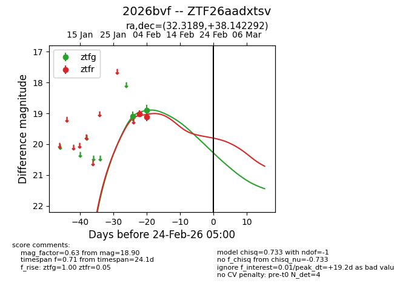
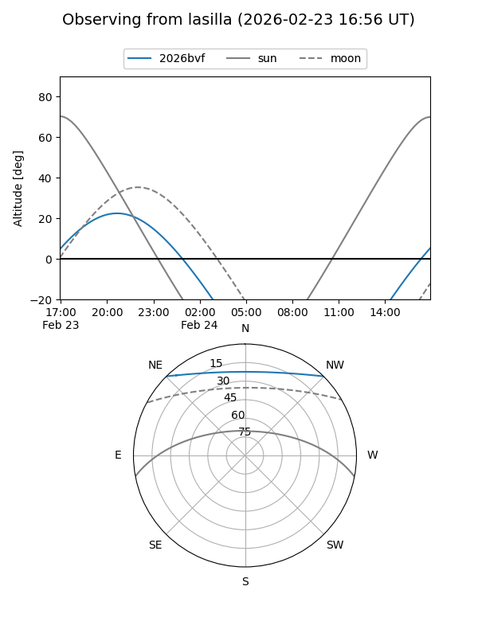
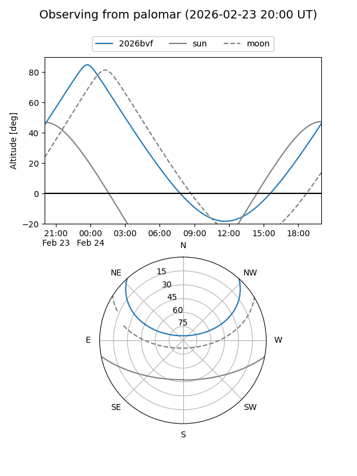

2026bvf
Target 2026bvf at 2026-02-24 09:08
Aliases and brokers:
FINK: link
Lasair: link
ALeRCE: link
TNS: link
YSE: link
alt names
ZTF26aadxtsv (ztf,fink_ztf)
2026bvf (tns,yse)
Coordinates:
equatorial (ra, dec) = 32.3189,+38.14229
equatorial (HMS+DMS) = 02:09:16.54,+38:08:32.25
galactic (l, b) = (139.3742,-22.23156)
Flags:
Photometry:
last ztfg=18.90, ztfr=19.12
2 ztfg, 2 ztfr detections
Lightcurve

Visibility


Additional plots